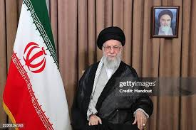

The death of Ayatollah Ali Khamenei has been officially confirmed by Iranian state media, marking the end of a 36-year reign and triggering an unprecedented Iran succession crisis. The Supreme Leader was killed in his office at the Beit Rahbari compound during the early hours of February 28, 2026, when combined US-Israeli forces executed precision strikes targeting Iran's leadership infrastructure [^25^]. This decapitation strike—part of Operation Epic Fury—represents the most significant elimination of an Iranian head of state since the 1979 Islamic Revolution.
Within days of the killing, Iran's Assembly of Experts moved swiftly to appoint Mojtaba Khamenei—the 56-year-old son of the slain leader—as the new Supreme Leader of the Islamic Republic [^26^]. This hereditary succession, unprecedented in Iran's theocratic system, has sparked intense debate about regime stability, the future of the Iran war, and whether Mojtaba can maintain control over a fractured nation under sustained military bombardment. This comprehensive analysis examines the confirmed details of Khamenei's death, the controversial appointment of his son, and what happens next in Iran's leadership crisis.

The Beit Rahbari compound in Tehran following the decapitation strike that killed Supreme Leader Ayatollah Ali KhameneiBreaking: Khamenei Death Confirmed by Iranian State Media
On March 1, 2026, Iranian state media officially confirmed that Ayatollah Ali Khamenei was martyred in a joint attack by the "criminal United States and the Zionist regime." The IRIB Telegram account reported that Khamenei was killed "at his workplace in the Beit Rahbari" while carrying out his assigned duties [^25^].
The confirmation came after hours of speculation and silence from Tehran. Semi-official Iranian government news agencies declared that "Grand Ayatollah Khamenei, the Supreme Leader of the Islamic Revolution, was martyred," describing him as a "great scholar and fighter" who devoted his life to the elevation of Iran and Islam [^25^]. The regime announced 40 days of public mourning and seven days of national holiday to honor the slain leader [^25^].
President Donald Trump had initially claimed credit for the killing on February 28, stating that US forces "took out" the Iranian leader. The confirmation from Iranian state media—rarely forthcoming about regime vulnerabilities—underscores the severity of the blow to Iran's leadership structure. Unlike previous assassination attempts or rumors of Khamenei's death during his 36-year reign, this killing has been verified by multiple sources including Iranian officials themselves.
"The Supreme Leader of the Islamic Revolution of Iran was martyred at his workplace in the Beit Rahbari. He was carrying out his assigned duties and present at his place of work at the moment of martyrdom." — IRIB State Media, March 1, 2026
Who is Mojtaba Khamenei? Iran's New Supreme Leader Profile
Mojtaba Khamenei, born September 8, 1969, in Mashhad, has been named Iran's third Supreme Leader since the 1979 revolution—marking the first hereditary succession in the Islamic Republic's history [^20^]. Unlike his father, who served as president before becoming Supreme Leader, Mojtaba has never held formal government office or served in an elected position [^20^]. His appointment by the 88-member Assembly of Experts represents a dramatic consolidation of dynastic power that critics argue contradicts the republic's foundational principles.
- Age: 56 years old (born September 8, 1969)
- Clerical Rank: Hujjat al-Islam (below Ayatollah)
- Military Background: Served in Revolutionary Guard during Iran-Iraq War
- Education: Studied theology in Qom under ultra-conservative clerics
- Family: Married to Zahra Haddad-Adel (killed in same strike as father)
- Public Role: Never held formal government position; operated behind the scenes
- IRGC Ties: Close connections to Revolutionary Guard Corps leadership
Mojtaba grew up in Tehran as his father rose through revolutionary ranks—from deputy defense minister to president and finally Supreme Leader in 1989 [^22^]. He graduated from the elite Alavi High School before joining the Revolutionary Guard, serving during the final years of the Iran-Iraq War. These military connections would prove crucial to his later influence, establishing relationships with future IRGC commanders who now form his power base.
His theological training in Qom—the center of Shia scholarship—placed him under the tutelage of hardline clerics including Mohammad-Taqi Mesbah-Yazdi, an influential ideologue who mentored many conservative regime figures [^20^]. Despite decades teaching advanced jurisprudence at Qom seminaries, Mojtaba remained largely invisible to the Iranian public, appearing only at official ceremonies and loyalist rallies [^22^].
 Mojtaba Khamenei during a pro-government rally—one of his rare public appearances before
becoming Supreme Leader
Mojtaba Khamenei during a pro-government rally—one of his rare public appearances before
becoming Supreme Leader
The Succession Crisis: Mojtaba vs. Ali Khomeini
The appointment of Mojtaba Khamenei was not without competition. Ali Khomeini—grandson of regime founder Ayatollah Khomeini—emerged as the primary alternative candidate, creating a fierce behind-the-scenes contest between Iran's two most powerful clerical families [^23^]. Analysts initially favored Ali Khomeini due to his revolutionary lineage, orthodox Islamist credentials, and marriage to the granddaughter of Grand Ayatollah Ali Sistani of Iraq—a connection that could bridge the rift between Iran's Qom seminaries and Iraq's Najaf religious establishment [^23^].
However, Mojtaba's advantages proved decisive. His decades-long proximity to his father's inner circle gave him unmatched access to regime intelligence and patronage networks. Most critically, his close ties to the IRGC—cultivated since his wartime service—provided the military backing necessary to secure the appointment [^22^]. Iran specialist Afshon Ostovar noted that Mojtaba was "the one that was closest to the IRGC" among all candidates, signaling the regime's priority to "preserve as much of the status quo as possible" [^22^].
The hereditary nature of this succession breaks with Iran's previous leadership transitions. When Ayatollah Khomeini died in 1989, the Assembly of Experts selected Ali Khamenei—then president—based on political experience rather than family connection. Mojtaba's elevation represents what critics call a "hereditary gamble," transforming the Islamic Republic into a de facto monarchy while maintaining theocratic pretensions [^21^].
The Mojtaba Khamenei appointment has immediate implications for regional security. Unlike his father, who developed sophisticated proxy networks over decades, Mojtaba inherits a war-torn command structure with decimated leadership ranks. His March 12 statement threatening to keep the Strait of Hormuz closed and demanding Gulf States expel US bases demonstrates continuity with his father's confrontational approach—but his ability to execute these threats remains untested. For Pakistan, India, and other South Asian powers, the succession introduces uncertainty into energy security calculations and regional alliance structures.
Trump's Reaction: "Unacceptable" and "Not Going to Last Long"
The United States has explicitly rejected Mojtaba Khamenei's legitimacy. President Trump told Axios that the choice would be "unacceptable" and suggested he wanted to handpick a new supreme leader—a process traditionally overseen solely by Iran's clerics [^26^]. "They are wasting their time. Khamenei's son is a lightweight. I have to be involved in the appointment," Trump stated. "Khamenei's son is unacceptable to me" [^26^].
In an ABC News interview, Trump repeated that the new leader "is not going to last long" if Iranian leaders do not get his approval [^26^]. This unprecedented American intervention into Iran's succession process—explicitly rejecting a Supreme Leader chosen by Iran's own constitutional mechanisms—raises questions about Washington's endgame in the conflict. The statements suggest the US may not recognize Mojtaba's authority in any future negotiations, potentially prolonging military operations until regime change is achieved.
The Israel Defense Forces have echoed this position, warning that any successor to the late Khamenei would be considered a target [^26^]. This creates a existential dilemma for Mojtaba: exercising Supreme Leader authority may make him a marked man, while retreating from public leadership would demonstrate weakness to internal rivals.
Why the Regime Hasn't Collapsed: US Intelligence Assessment
Despite the decapitation strike and weeks of intensive bombing, US intelligence indicates Iran's regime is not at risk of collapse. Multiple intelligence reports provide "consistent analysis that the regime is not in danger" and "retains control of the Iranian public," according to sources familiar with the assessments [^19^]. This finding contradicts initial expectations that Khamenei's death would trigger regime disintegration.
Professor Stephen Zunes of the University of San Francisco argues that Washington misunderstood Iran's political structure. "It's not a matter of one-man rule where you could get rid of the bad guy and then things can open up," Zunes explains. "Iran is not governed by a single leader whose removal would dismantle the state. Instead, the system functions through overlapping institutions that collectively sustain the regime" [^18^].
The Islamic Revolutionary Guard Corps (IRGC)—the regime's most powerful institution—has proven resilient despite losing senior commanders. With leadership networks that "run pretty deep," the IRGC maintains control over large economic sectors and internal security apparatus [^18^]. This institutional depth explains why Khamenei's death, while symbolically devastating, has not produced the regime collapse some predicted.
Israeli officials in closed discussions have acknowledged similar uncertainty about the war's ultimate political impact, with one senior official telling Reuters there is "no certainty the war will lead to the clerical government's collapse" [^19^]. The consensus emerging among Western and regional intelligence services: removing Mojtaba's father eliminated a symbolic figurehead, but the regime's coercive infrastructure remains largely intact.
What Happens Next: Scenarios for Iran's Future
As Mojtaba Khamenei assumes the Supreme Leader's mantle, three scenarios dominate strategic analysis. The consolidation scenario sees Mojtaba leveraging IRGC support to gradually assert authority, maintaining regime continuity despite military setbacks. His March 12 statement—threatening continued Strait of Hormuz closure and demanding US base closures—suggests he intends to project strength rather than pursue accommodation [^13^].
The collapse scenario envisions internal fractures overwhelming Mojtaba's limited experience. Unlike his father, who spent decades building loyalty networks, Mojtaba inherits a command structure decimated by assassinations and a population facing economic ruin. Anti-regime protests—suppressed but not eliminated—could resurge if military pressure continues. Professor Zunes notes that regime collapse would likely require "a ground offensive that would allow people inside Iran to safely protest in the streets" [^19^]—an option Trump has not ruled out.
The negotiated transition scenario involves international recognition of Mojtaba's authority in exchange for nuclear program dismantlement and proxy force demobilization. However, Trump's explicit rejection of Mojtaba's legitimacy complicates this path. The president's statement that he "has to be involved in the appointment" suggests Washington may demand a leadership change as a precondition for ending hostilities [^26^].
Global Consequences and Latest Updates
The death of Ayatollah Khamenei and Mojtaba's succession have triggered immediate global repercussions. Oil markets remain volatile as the Strait of Hormuz closure threat disrupts 20% of global petroleum shipments. The 40-day mourning period declared by Iranian authorities—extending into early April—may delay any diplomatic initiatives while the regime projects public solidarity [^25^].
Latest intelligence suggests Mojtaba faces an immediate test of authority: maintaining IRGC cohesion while sustaining military operations against Israel and Gulf State targets. His family's tragic losses—wife Zahra, mother Mansoureh, sister, and brother-in-law all killed in the same strike that killed his father—have generated sympathy among regime loyalists but also raise questions about his emotional stability during crisis [^20^] [^22^].
The international community remains divided. While Western powers debate recognizing Mojtaba's government, regional actors from Pakistan to Turkey monitor the succession for shifts in Iran's regional posture. The coming weeks will determine whether Mojtaba Khamenei consolidates power as Iran's third Supreme Leader—or becomes a transitional figure in the Islamic Republic's final chapter.
Conclusion
The death of Ayatollah Ali Khamenei represents a watershed moment in Iranian history, eliminating a leader who dominated the Islamic Republic for 36 years. The appointment of Mojtaba Khamenei as his successor—breaking with republican precedent to establish hereditary rule—reflects the regime's desperation to project continuity amid existential crisis. Yet US intelligence assessments and Trump's explicit rejection of Mojtaba's legitimacy suggest this succession may prove unstable.
For analysts tracking the Iran war, the succession crisis introduces critical uncertainty. Will Mojtaba moderate Iran's regional posture to survive, or double down on confrontation to satisfy IRGC hardliners? Can a leader who never held public office command loyalty from a devastated military and impoverished population? The answers will determine whether 2026 marks the beginning of a new Iranian era—or the end of the Islamic Republic itself. As the 40-day mourning period continues and US-Israeli strikes persist, the world watches to see if hereditary succession can save a regime decapitated by modern warfare.